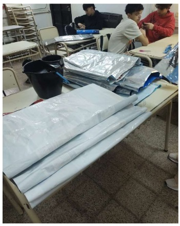
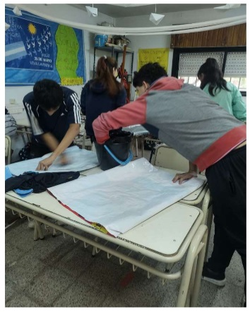
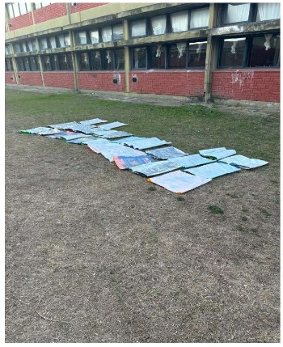
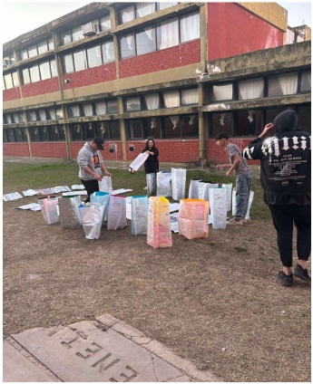
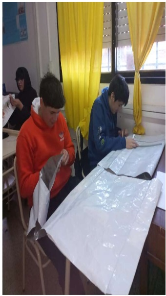
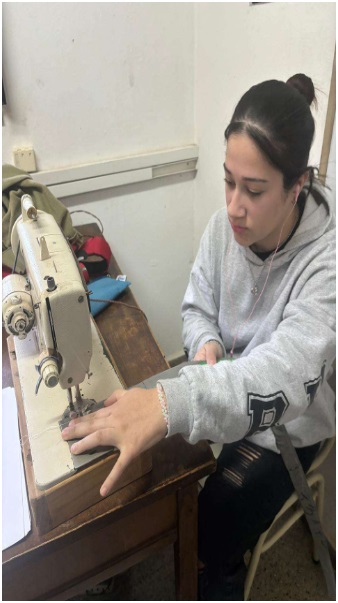
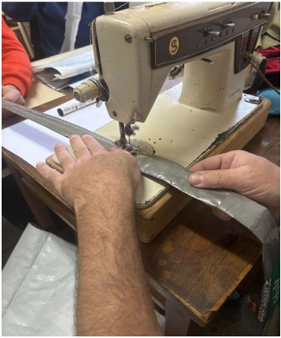

Fabricación de las bolsas
Después de analizar las dimensiones y características de las bolsas de alimento balanceado que recolectamos, nos dedicamos a diseñar un molde que fuera versátil y eficiente. Tras varios intentos y ajustes, logramos crear un molde que se adaptaba a los diferentes tamaños de bolsas de alimento balanceado, lo único que variamos a la hora de armar la bolsa es la distancia de las manijas para que quede proporcional a cada tamaño de bolsa.
Este paso fue fundamental para estandarizar el proceso de corte y garantizar que todas las bolsas producidas mantuvieran un tamaño y forma coherentes. Las bolsas más grandes sirven para grandes compras mientras que las bolsas resultantes de las bolsas de alimento más chicas sirven para compras pequeños o como bolso matero. Modelos y bolsas que tuvimos en cuenta para crear un molde genérico que nos sirva para todos los tamaños de bolsas existentes.

Una vez que tuvimos el molde, procedimos a limpiar cuidadosamente cada una de las bolsas recolectadas. Este proceso incluyó el lavado y desinfección de las bolsas para asegurarnos de que estuvieran aptas para su reutilización. Para ello cortamos la parte inferior y superior de cada bolsa, luego la dimos vuelta y finalmente la higienizábamos con agua detergente y lavandina, posteriormente dejamos que se seque al sol.
Luego, utilizamos el molde para cortar las bolsas en piezas que serían ensambladas posteriormente. Después del corte cada bolsa quedaba dividida en dos partes una parte de 14 cm de ancho la cual es utilizada para las manijas y la otra parte es la bolsa en sí. Este paso demandó precisión y trabajo en equipo, ya que cada corte debía ser exacto para maximizar el uso del material y minimizar el desperdicio. Cortamos la parte inferior y superior de cada bolsa, luego la dimos vuelta y finalmente la higienizábamos con agua detergente, lavandina y las secamos al sol.
  
Con las piezas cortadas, iniciamos la fase de plegado y cosido de las bolsas. Las manijas fueron plegadas y cosidas las mismas llevan cuatro pliegues y doble costura a lo largo de toda la tira para que quede reforzada. Por otro lado, el resto de la bolsa lleva doble costura en la base a 1,5 cm y a 3 cm, luego le realizamos unos pliegues para darle profundidad en la base realizamos dos costuras más en los extremos y cortamos el excedente. Para finalmente unir las manijas a la bolsa reforzando las costuras para que soporten el peso.
Durante esta actividad, nos dividimos en grupos para acelerar el proceso: unos se encargaron del plegado, otros de la costura, y otros del control de calidad. Como eran muchas bolsas los grupos fueron rotando para que todos pasáramos por la experiencia de plegado, costura y control de calidad. El resultado fue la producción de un lote de bolsas ecoamigables listas para su distribución y comercialización.
   Volver a la página principal